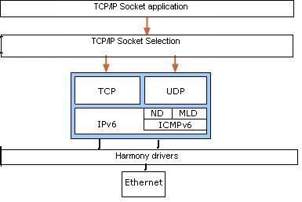
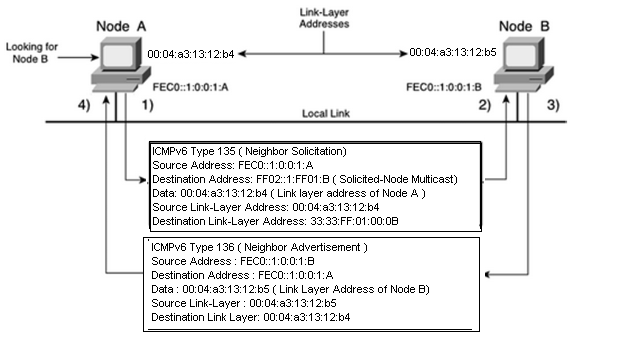

|
MPLAB Harmony TCP/IP Help
|
NDP with IPv6 Software Abstraction Block Diagram
This module provides software abstraction of the IPv6 module existent in any TCP/IP Stack implementation. It removes the overhead of address resolution from all other modules in the stack.
IPv6 Block Diagram

1) Using the address FEC0::1:0:0:1 :A, node A wants to deliver packets to destination node B using the IPv6 address FEC0::1 :0:0:1 :B on the same local link. However, node A does not know node B's link-layer address. Node A sends an ICMPv6 Type
135 message (neighbor solicitation) on the local link using its site-local address FEC0::1:0:0:1:A as the IPv6 source address, the solicited-node multicast address FF02::1 :FF01:B corresponding to the target address FEC0::1 :0:0:1 :B as the destination IPv6 address, and the source link-layer address 00:04:a3:13:12:b4 of the sender, node A, as data of the ICMPv6 message. The source link-layer address of this frame is the link-layer address 00:04:a3:13:12:b4 of node A. The destination link-layer address 33:33:FF:01 :00:0B of this frame uses multicast mapping of the destination IPv6 address FF02::1 :FF01 :B.
2) Node B, which is listening to the local link for multicast addresses, intercepts the neighbor solicitation message because the destination IPv6 address FF02::1:FF01:B represents the solicited-node multicast address corresponding to its IPv6 address FEC0::1:0:0:1:B.
3) Node B replies by sending a neighbor advertisement message using its site-local address FEC0::1 :0:0:1 :B as the IPv6 source address and the site-local address FEC0::1 :0:0:1 :A as the destination IPv6 address. It also includes its link-layer address 00:04:a3:13:12:b5 in the ICMPv6 message. After receiving neighbor solicitation and neighbor advertisement messages, node A and node B know each other's link-layer addresses.
Learned link-layer addresses are kept in a neighbor discovery table (neighbor cache). Therefore, the nodes can communicate on the local link. The neighbor solicitation message is also used by nodes to verify the reachability of neighbor nodes in the neighbor discovery table (neighbor cache). However, the unicast addresses of the neighbor nodes are used as destination IPv6 addresses in ICMPv6 messages instead of solicited-node multicast addresses in this situation. It is possible for a node that changes its link-layer address to inform all other neighbor nodes on the local link by sending a neighbor advertisement message using the all-nodes multicast address FF02::1 . The neighbor discovery table of the nodes on the local link is updated with the new link-layer address.

|
MPLAB Harmony TCP/IP Help
|